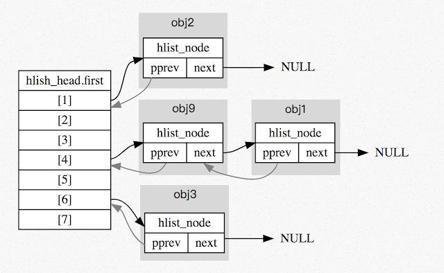
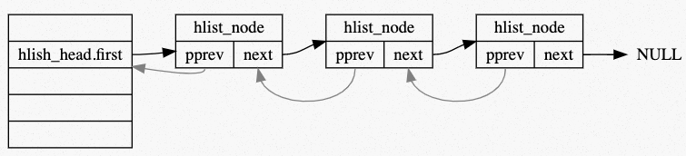

題目5 / 參考題解#
Reference#
測驗 1#
LeetCode 編號 1 的題目 Two Sum，貌似簡單，作為 LeetCode 的開篇之題，乃是經典中的經典，正所謂「平生不識 Two Sum，刷盡 LeetCode 也枉然」，就像英語單詞書的第一個單詞總是 Abandon 一樣，很多沒有毅力堅持的人就只能記住這一個單詞，所以通常情況下單詞書就前幾頁有翻動的痕跡，後面都是嶄新如初，道理不需多講，雞湯不必多灌，明白的人自然明白。
以上說法取自 Two Sum 兩數之和 mint condition: “mint” 除了薄荷的意思，還可指鑄幣廠，”mint condition” 裡的 “mint” 就與鑄幣廠有關。有些人收集錢幣會在錢幣剛開始發行時收集，因爲這樣的錢幣看起來很新，他們會用 “mint condition” 來形容這種錢幣的狀況，強調「像剛從鑄幣廠出來」，後來衍伸出「有如新一樣的二手商品」的意涵。
題意是給定一個陣列 nums 和一個目標值 target，求找到 nums 的 2 個元素相加會等於 target 的索引值。題目確保必為單一解，且回傳索引的順序沒差異。例如給定輸入 nums = [2, 7, 11, 15], target = 9，相加變成 9 的元素僅有 2 及 7，因此回傳這二個元素的索引值 [0, 1]
考慮以下 C 語言實作:
#include <stdlib.h>
static int cmp(const void *lhs, const void *rhs) {
if (*(int *) lhs == *(int *) rhs)
return 0;
return *(int *) lhs < *(int *) rhs ? -1 : 1;
}
static int *alloc_wrapper(int a, int b, int *returnSize) {
*returnSize = 2;
int *res = (int *) malloc(sizeof(int) * 2);
res[0] = a, res[1] = b;
return res;
}
int *twoSum(int *nums, int numsSize, int target, int *returnSize)
{
*returnSize = 2;
int arr[numsSize][2]; /* {value, index} pair */
for (int i = 0; i < numsSize; ++i) {
arr[i][0] = nums[i];
arr[i][1] = i;
}
qsort(arr, numsSize, sizeof(arr[0]), cmp);
for (int i = 0, j = numsSize - 1; i < j; ) {
if (arr[i][0] + arr[j][0] == target)
return alloc_wrapper(arr[i][1], arr[j][1], returnSize);
if (arr[i][0] + arr[j][0] < target)
++i;
else
--j;
}
*returnSize = 0;
return NULL;
}
若用暴力法，時間複雜度為 \(O(n^2)\)，顯然不符合期待。我們可改用 hash table (以下簡稱 HT) 記錄缺少的那一個值 (即 target - nums[i]) 和對應的索引。考慮以下案例:
nums =
[2, 11, 7, 15]：
對應的步驟:
nums[0]是2，HT[2]不存在，於是建立HT[9 - 2] = 0nums[1]是11，HT[11]不存在，於是建立HT[9 - 11] = 1nums[2]是7，HT[7]存在 (設定於步驟1)，於是回傳[2, HT[7]] = [2, 0]

hlist 用於 hash table 的實作，它的資料結構定義在 include/linux/types.h 中:
struct hlist_head {
struct hlist_node *first;
};
struct hlist_node {
struct hlist_node *next, **pprev;
};
示意如下: 
hlist 的操作與 list 一樣定義於 include/linux/list.h，以 hlist_ 開頭。hlist_head 和 hlist_node 用於 hash table 中 bucket 的實作，具有相同 hash value 的節點會放在同一條 hlist 中。 為了節省空間，hlist_head 只使用一個 first 指標指向 hlist_node，沒有指向串列尾節點的指標。
hash table 主要是由一個 hlist_head 的動態陣列所構成，每個 entry 指向一個由 struct hlist_node 構成的非環狀 doubly linked list ，hash table 長度依照 bits 給定，可知大小為 2 的冪。
而可以發現 struct hlist_head 只有一個 struct hlist_node * 的成員; 而 struct hlist_node 型態卻包含一個 struct hlist_node * 及 struct hlist_node ** ，其中一個原因為 hash table 指向的為非環狀的 linked list ，因此只需指向 list 的一端點，若單純使用 struct hlist_node 當作 head ，無用的 “pprev” 會造成大量的記憶體空間浪費，因此將 head 與 node 分開來實做。
而 struct hlist_node 中的 pprev 為何使用「指標的指標」而非「指標」？ 回答這個問題前可以先參考 Linux 原始碼中 type.h ：
1struct list_head {
2 struct list_head *next, *prev;
3};
4
5struct hlist_head {
6 struct hlist_node *first;
7};
8
9struct hlist_node {
10 struct hlist_node *next, **pprev;
11};
可知在 type.h 中有兩種 list 的結構：
struct list_head 在 Linux 中實作為環狀 doubly-linked list，且可以在行程管理 (process scheduling) 的相關實做上看到，如 sched.h 中有近 20 處使用到此結構，因可快速存取到頭以及尾的節點（時間複雜度 \(O(1)\)） 故有較好的效能，適用於行程管理這種對時間要求嚴謹的部分做使用。
引用自 linux sched.h
1struct sched_entity {
2 /* For load-balancing: */
3 struct load_weight load;
4 struct rb_node run_node;
5 struct list_head group_node;
6 unsigned int on_rq;
7 ...
8}
struct hlist_head 搭配 hlist_node。在 Linux 核心中專門為了 hash table 而使用，hlist_head 的設計也省去了 list 起始端 pprev 的存放空間、在初始狀態就省去了一半的記憶體容量。而且同時 hash table 不會特別需要存取到 list 的尾端，並且走訪 list 相對沒那麼講求效率（因為 hash 的設計理念就是講求 hash collision rate 要低、因此一個 list 若太長比較需要改進的為 hash function 的設計而非改進整個資料結構）。綜合上述所說單向 list 已滿足 hash table 的需求。
pprev 為何是「指標的指標」？若和 list_head 一樣使用單純的指標( hlist_node *)，則考慮到 list 有方向性，delete node 時需要額外檢查其是否為 list 的 head 或是 NULL 等等，有較冗餘的程式碼必須實做，因此使用 hlist_node **pprev 直接存取上一個 node 所在的位址。Linux 為求程式碼簡潔故以 pointer to pointer 的方式用 pprev 直接指向前一個元素的記憶體位址本身。
以下是引入 hash table 的實作，學習 Linux 核心程式碼風格:
#include <stddef.h>
#include <stdlib.h>
struct hlist_node { struct hlist_node *next, **pprev; };
struct hlist_head { struct hlist_node *first; };
typedef struct { int bits; struct hlist_head *ht; } map_t;
#define MAP_HASH_SIZE(bits) (1 << bits)
map_t *map_init(int bits) {
map_t *map = malloc(sizeof(map_t));
if (!map)
return NULL;
map->bits = bits;
map->ht = malloc(sizeof(struct hlist_head) * MAP_HASH_SIZE(map->bits));
if (map->ht) {
for (int i = 0; i < MAP_HASH_SIZE(map->bits); i++)
(map->ht)[i].first = NULL;
} else {
free(map);
map = NULL;
}
return map;
}
struct hash_key {
int key;
void *data;
struct hlist_node node;
};
#define container_of(ptr, type, member) \
({ \
void *__mptr = (void *) (ptr); \
((type *) (__mptr - offsetof(type, member))); \
})
#define GOLDEN_RATIO_32 0x61C88647
static inline unsigned int hash(unsigned int val, unsigned int bits) {
/* High bits are more random, so use them. */
return (val * GOLDEN_RATIO_32) >> (32 - bits);
}
static struct hash_key *find_key(map_t *map, int key) {
struct hlist_head *head = &(map->ht)[hash(key, map->bits)];
for (struct hlist_node *p = head->first; p; p = p->next) {
struct hash_key *kn = container_of(p, struct hash_key, node);
if (kn->key == key)
return kn;
}
return NULL;
}
void *map_get(map_t *map, int key)
{
struct hash_key *kn = find_key(map, key);
return kn ? kn->data : NULL;
}
void map_add(map_t *map, int key, void *data)
{
struct hash_key *kn = find_key(map, key);
if (kn)
return;
kn = malloc(sizeof(struct hash_key));
kn->key = key, kn->data = data;
struct hlist_head *h = &map->ht[hash(key, map->bits)];
struct hlist_node *n = &kn->node, *first = h->first;
AAA;
if (first)
first->pprev = &n->next;
h->first = n;
BBB;
}
void map_deinit(map_t *map)
{
if (!map)
return;
for (int i = 0; i < MAP_HASH_SIZE(map->bits); i++) {
struct hlist_head *head = &map->ht[i];
for (struct hlist_node *p = head->first; p;) {
struct hash_key *kn = container_of(p, struct hash_key, node);
struct hlist_node *n = p;
p = p->next;
if (!n->pprev) /* unhashed */
goto bail;
struct hlist_node *next = n->next, **pprev = n->pprev;
*pprev = next;
if (next)
next->pprev = pprev;
n->next = NULL, n->pprev = NULL;
bail:
free(kn->data);
free(kn);
}
}
free(map);
}
int *twoSum(int *nums, int numsSize, int target, int *returnSize)
{
map_t *map = map_init(10);
*returnSize = 0;
int *ret = malloc(sizeof(int) * 2);
if (!ret)
goto bail;
for (int i = 0; i < numsSize; i++) {
int *p = map_get(map, target - nums[i]);
if (p) { /* found */
ret[0] = i, ret[1] = *p;
*returnSize = 2;
break;
}
p = malloc(sizeof(int));
*p = i;
map_add(map, nums[i], p);
}
bail:
map_deinit(map);
return ret;
}
請補完程式碼。
作答區
AAA = ?
(a)/* no operation */(b)n->pprev = first(c)n->next = first(d)n->pprev = n
Ans: (c)
BBB = ?
(a)n->pprev = &h->first(b)n->next = h(c)n->next = n(d)n->next = h->first(e)n->next = &h->first
Ans: (a)
See also
延伸題目:
解釋上述程式碼運作原理
研讀 Linux 核心原始程式碼 include/linux/hashtable.h 及對應的文件 How does the kernel implements Hashtables?，解釋 hash table 的設計和實作手法，並留意到 tools/include/linux/hash.h 的
GOLDEN_RATIO_PRIME，探討其實作考量
測驗 2#
針對 LeetCode 82. Remove Duplicates from Sorted List II，以下是可能的合法 C 程式實作:
1#include <stddef.h>
2
3struct ListNode {
4 int val;
5 struct ListNode *next;
6};
7
8struct ListNode *deleteDuplicates(struct ListNode *head)
9{
10 if (!head)
11 return NULL;
12
13 if (COND1) {
14 /* Remove all duplicate numbers */
15 while (COND2)
16 head = head->next;
17 return deleteDuplicates(head->next);
18 }
19
20 head->next = deleteDuplicates(head->next);
21 return head;
22}
請補完程式碼，注意作答規範:
|,||,&,&&作為 logical/bitwise operator 時，應該要跟 operand 有一個空白字元區隔，也就是A | B和C && D的形式COND1和COND2中「不要」出現小括號，也就是(和)->前後不要出現空白，也就是應該寫作ptr->next而非ptr -> next=和==前後要有空白，也就是寫作A == B和C = 1COND1和COND2不包含;,:,?等符號儘量寫出最精簡的程式碼，而且答案也只接受符合上述程式碼排版風格的最精簡形式
COND1:head->next && head->val == head->next->val
COND2:head->next && head->val == head->next->val
See also
延伸問題:
嘗試避免遞迴，寫出同樣作用的程式碼
以類似 Linux 核心的 circular doubly-linked list 改寫，撰寫遞迴和迭代 (iterative) 的程式碼
測驗 3#
針對 LeetCode 146. LRU Cache，以下是 Least Recently Used (LRU) 可能的合法 C 程式實作:
1#include <stdio.h>
2#include <stdlib.h>
3#include "list.h"
4
5typedef struct {
6 int capacity, count;
7 struct list_head dhead, hheads[];
8} LRUCache;
9
10typedef struct {
11 int key, value;
12 struct list_head hlink, dlink;
13} LRUNode;
14
15LRUCache *lRUCacheCreate(int capacity)
16{
17 LRUCache *obj = malloc(sizeof(*obj) + capacity * sizeof(struct list_head));
18 obj->count = 0;
19 obj->capacity = capacity;
20 INIT_LIST_HEAD(&obj->dhead);
21 for (int i = 0; i < capacity; i++)
22 INIT_LIST_HEAD(&obj->hheads[i]);
23 return obj;
24}
25
26void lRUCacheFree(LRUCache *obj)
27{
28 LRUNode *lru, *n;
29 MMM1 (lru, n, &obj->dhead, dlink) {
30 list_del(&lru->dlink);
31 free(lru);
32 }
33 free(obj);
34}
35
36int lRUCacheGet(LRUCache *obj, int key)
37{
38 LRUNode *lru;
39 int hash = key % obj->capacity;
40 MMM2 (lru, &obj->hheads[hash], hlink) {
41 if (lru->key == key) {
42 list_move(&lru->dlink, &obj->dhead);
43 return lru->value;
44 }
45 }
46 return -1;
47}
48
49void lRUCachePut(LRUCache *obj, int key, int value)
50{
51 LRUNode *lru;
52 int hash = key % obj->capacity;
53 MMM3 (lru, &obj->hheads[hash], hlink) {
54 if (lru->key == key) {
55 list_move(&lru->dlink, &obj->dhead);
56 lru->value = value;
57 return;
58 }
59 }
60
61 if (obj->count == obj->capacity) {
62 lru = MMM4(&obj->dhead, LRUNode, dlink);
63 list_del(&lru->dlink);
64 list_del(&lru->hlink);
65 } else {
66 lru = malloc(sizeof(LRUNode));
67 obj->count++;
68 }
69 lru->key = key;
70 list_add(&lru->dlink, &obj->dhead);
71 list_add(&lru->hlink, &obj->hheads[hash]);
72 lru->value = value;
73}
請補完程式碼，注意作答規範:
MMM1,MMM2,MMM3,MMM4都是 Linux 核心風格的 list 巨集，以list_開頭不要出現空白
儘量寫出最精簡的程式碼，而且答案也只接受符合上述程式碼排版風格的最精簡形式
MMM1:list_for_each_entry_safeorlist_for_each_entry_safe_reverse
MMM2:list_for_each_entry(because of the locality, forward search is better than backward search)
MMM3:list_for_each_entry(because of the locality, forward search is better than backward search)
MMM4:list_last_entry
See also
延伸問題:
解釋上述程式碼的運作，撰寫完整的測試程式，指出其中可改進之處並實作
在 Linux 核心找出 LRU 相關程式碼並探討
測驗 4#
針對 LeetCode 128. Longest Consecutive Sequence，以下是可能的合法 C 程式實作:
1#include <stdio.h>
2#include <stdlib.h>
3#include "list.h"
4
5struct seq_node {
6 int num;
7 struct list_head link;
8};
9
10static struct seq_node *find(int num, int size, struct list_head *heads)
11{
12 struct seq_node *node;
13 int hash = num < 0 ? -num % size : num % size;
14 list_for_each_entry (node, &heads[hash], link) {
15 if (node->num == num)
16 return node;
17 }
18 return NULL;
19}
20
21int longestConsecutive(int *nums, int n_size)
22{
23 int hash, length = 0;
24 struct seq_node *node;
25 struct list_head *heads = malloc(n_size * sizeof(*heads));
26
27 for (int i = 0; i < n_size; i++)
28 INIT_LIST_HEAD(&heads[i]);
29
30 for (int i = 0; i < n_size; i++) {
31 if (!find(nums[i], n_size, heads)) {
32 hash = nums[i] < 0 ? -nums[i] % n_size : nums[i] % n_size;
33 node = malloc(sizeof(*node));
34 node->num = nums[i];
35 list_add(&node->link, &heads[hash]);
36 }
37 }
38
39 for (int i = 0; i < n_size; i++) {
40 int len = 0;
41 int num;
42 node = find(nums[i], n_size, heads);
43 while (node) {
44 len++;
45 num = node->num;
46 list_del(&node->link);
47
48 int left = num, right = num;
49 while ((node = find(LLL, n_size, heads))) {
50 len++;
51 list_del(&node->link);
52 }
53
54 while ((node = find(RRR, n_size, heads))) {
55 len++;
56 list_del(&node->link);
57 }
58
59 length = len > length ? len : length;
60 }
61 }
62
63 return length;
64}
請補完程式碼
LLL = ?
(a)left(b)left++(c)++left(d)left--(e)--left
Ans: (e)
RRR = ?
(a)right(b)right++(c)++right(d)right--(e)--right
Ans: (c)
See also
延伸問題:
解釋上述程式碼的運作，撰寫完整的測試程式，指出其中可改進之處並實作
嘗試用 Linux 核心風格的 hash table 重新實作上述程式碼